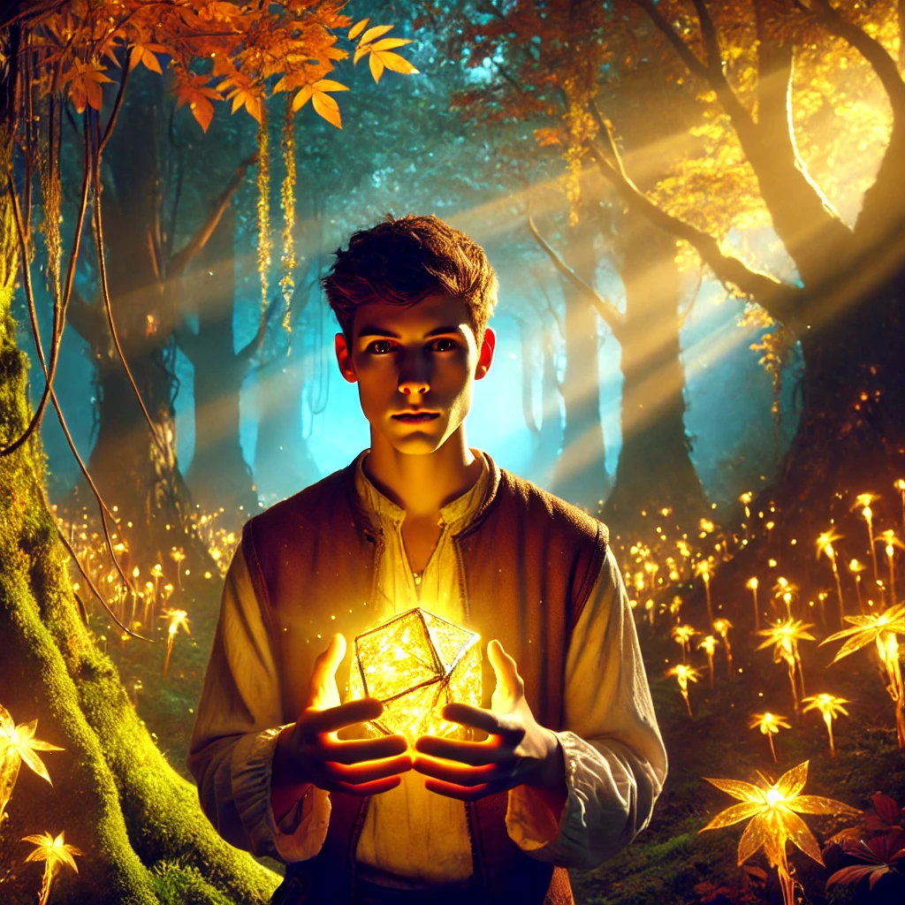

O Chamado para a Jornada
Era uma manhã como qualquer outra na vila de Eldoria, mas algo dentro de você dizia que aquele dia seria diferente. Enquanto caminhava pela trilha da Floresta Encantada, seus olhos foram atraídos por um brilho incomum entre as folhas. Uma pedra esférica, com um brilho dourado que pulsava como um coração vivo, repousava em um pedestal coberto de musgo. Quando você tocou a pedra, uma energia percorreu seu corpo. Antes que pudesse entender o que havia acontecido, uma raposa dourada emergiu das sombras. Seus olhos brilhavam como duas estrelas, e sua voz era tão suave quanto o vento da manhã. 'Você foi escolhido, viajante', disse a raposa. 'Este artefato carrega o destino do nosso mundo. O equilíbrio entre luz e trevas está rompido, e apenas você pode restaurá-lo.' À sua frente, dois caminhos surgiram como se a floresta os moldasse para você. À esquerda, o caminho da luz, iluminado por raios dourados que atravessavam as copas das árvores. À direita, o caminho das trevas, envolto em uma névoa densa e fria.
